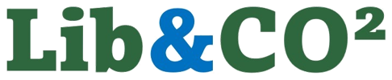
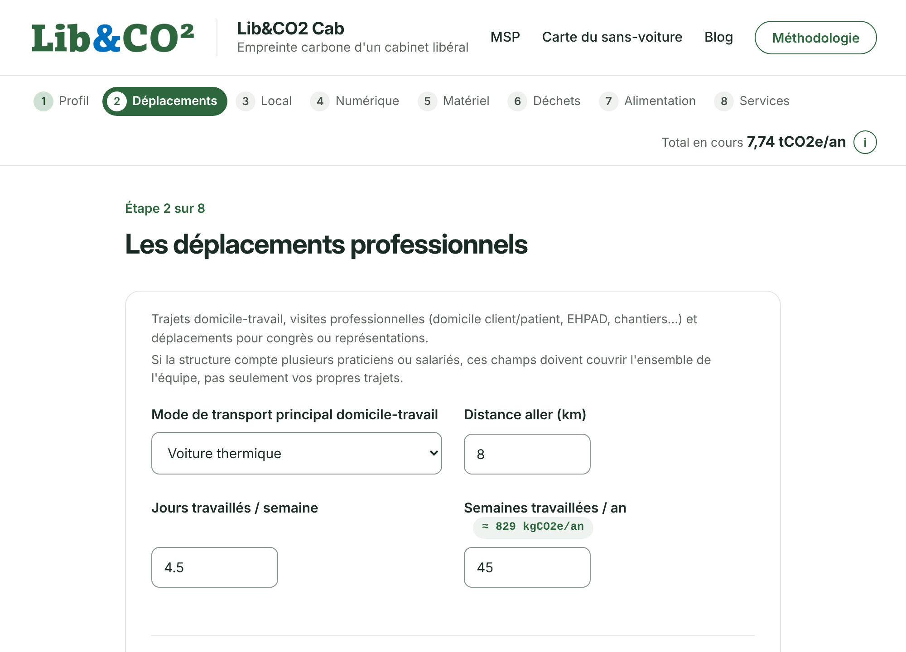
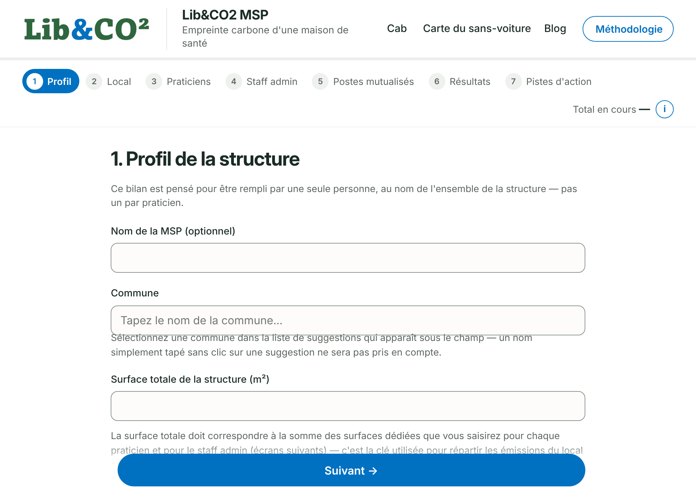
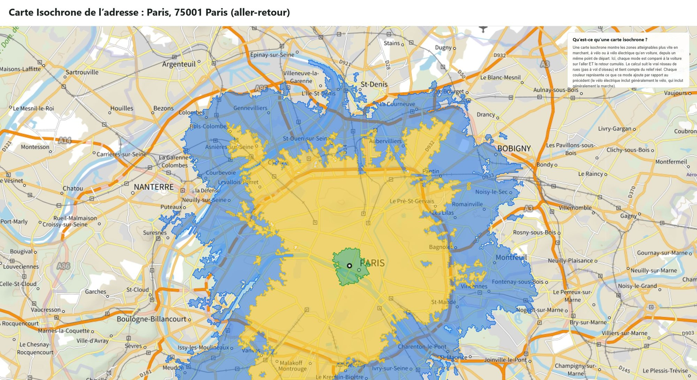

Pour un cabinet libéral
Lib&CO2 Cab
Santé, juridique, conseil, architecture, artisanat d'art : votre empreinte annuelle, votre ratio par acte et un plan d'action priorisé, en moins de 8 minutes.
Découvrir Lib&CO2 Cab
Décarbonation des professions libérales
Des outils gratuits, open source et entièrement sourcés pour mesurer et réduire l'empreinte carbone des professionnels libéraux : santé, droit, conseil, architecture, artisanat d'art.

8 min
pour une première estimation
100+
cabinets mesurés avec KinéCO2
0 €
sans compte, sans abonnement
Chaque facteur d'émission est documenté et sourcé (ADEME, Insee, SDES) ; ce qui reste estimé est signalé. Aucun compte, aucune donnée envoyée : tout se calcule dans votre navigateur.
Pour un cabinet libéral
Santé, juridique, conseil, architecture, artisanat d'art : votre empreinte annuelle, votre ratio par acte et un plan d'action priorisé, en moins de 8 minutes.
Découvrir Lib&CO2 Cab
Pour une maison de santé
Un seul répondant pour toute la structure : empreinte collective, indicateur de dépendance aux énergies fossiles et plan d'action par praticien.
Découvrir Lib&CO2 MSP
Pour vos patients et clients
Autour de votre adresse, les zones où la marche, le vélo et le vélo électrique arrivent avant la voiture, sur le vrai réseau de rues et le relief. À imprimer pour une salle d'attente.
Découvrir La carte du sans-voitureCes outils ont été développés avec l'aide de l'intelligence artificielle (Claude, Anthropic). Le coût carbone de ce développement est estimé à environ 1,2 kg CO2e par outil — une estimation haute, fondée sur des fourchettes publiées faute de données officielles communiquées par les fournisseurs de ces modèles, à mettre en perspective avec les kilogrammes économisés par les actions que ces outils permettent d'identifier.
Les outils sont gratuits et le resteront. Pour fiabiliser une mesure, construire un plan d'action, mobiliser une équipe ou tout un réseau, Lib&CO2 propose aussi un accompagnement, pour les petites structures comme pour les institutions.
Pour une maison de santé, un cabinet de groupe, une CPTS ou toute petite structure : empreinte mesurée ensemble à partir de vos données réelles, priorités chiffrées, plan d'action concret et suivi d'une année sur l'autre.
Écrire à ce sujet →Pour une URPS, une ARS, une fédération, un ordre ou une collectivité : déploiement des outils sur un réseau de structures, campagne de mesure, restitution collective et indicateurs de suivi.
Écrire à ce sujet →Sensibilisation ou atelier pratique pour une équipe ou un réseau de professionnels : comprendre d'où viennent les émissions d'un cabinet et repartir avec des actions adaptées à son métier.
Écrire à ce sujet →La carte du sans-voiture calculée pour une ou plusieurs adresses, imprimée en grand format (affiche, panneau rigide, bâche ou toile) et livrée sur place : salle d'attente, gare, mairie, magasin.
Écrire à ce sujet →Un premier échange, sans engagement, permet de voir si et comment Lib&CO2 peut vous être utile. Chaque lien ouvre votre messagerie avec une courte trame à compléter : rien n'est envoyé sans vous.
2024–2025
Lib&CO2 a participé au projet national KinéCO2, porté par plusieurs Unions Régionales des Professionnels de Santé (URPS) et déployé avec la méthodologie du cabinet MyCO2 (Carbone 4). Un panel de plus d'une centaine de cabinets de masso-kinésithérapie répartis sur toute la France a permis de mesurer, pour la première fois, l'empreinte carbone réelle d'une séance de kinésithérapie libérale — et d'identifier des pistes d'action réalistes pour la profession.
La sensibilisation sur l'empreinte carbone, MyCO2 par Carbone 4 (nouvel onglet)
2025–2026
Fort de cette première expérimentation, Lib&CO2 SASU a élargi la démarche au-delà de la kinésithérapie : santé, juridique, conseil, architecture, artisanat d'art. C'est ainsi qu'est né Lib&CO2 Cab, puis Lib&CO2 MSP pour les structures collectives.
En septembre 2026 s'y ajoute La carte du sans-voiture : le premier poste d'émissions d'un cabinet est souvent le trajet de ses patients ou clients. La carte montre, autour d'une adresse, où la marche, le vélo et le vélo électrique battent la voiture, calculé sur le réseau de rues et le relief de l'IGN.
Praticien, structure collective, institution ou simplement curieux du projet : nous répondons à tous les messages.
libetco2@gmail.com